Node List#
Shape: Primitive  #
#
This node represents a shape primitive.
Shape Activity: The shape will be ignored if this is set to false.
- Type: The type of the primitive used for this shape:
- Sphere
 Ball shape which can only be scaled uniformly.
Ball shape which can only be scaled uniformly. Radius: The radius of a Sphere shape in meters. Higher values give a bigger sphere.
- Sphere
- Box
 Cube which can be scaled in three axis:
Cube which can be scaled in three axis: Size: The size of the Box shape in meters.
- Box
- Capsule
 Cylinder like shape with a spherical top and bottom:
Cylinder like shape with a spherical top and bottom: Length: The length of a Capsule shape in meters.
Radius: The radius or thickness of a Capsule shape.
- Capsule
- Torus
 Donut-like shape controlled by two radiuses:
Donut-like shape controlled by two radiuses: Minor Radius: The major radius of a Torus shape, i.e. the distance to the center of the main ring.
Major Radius: The minor radius of a Torus shape, i.e. the radius of the circle extruded along the main ring.
- Torus
- Cylinder
 Round bar shape:
Round bar shape: Radius: The radius or thickness of a Cylinder shape.
Height: The height or length of a Cylinder shape.
- Cylinder
- Cone
 Cylinder with adjustable top and bottom radius:
Cylinder with adjustable top and bottom radius: Radius One: The radius of the Cone shape’s first cap (bottom).
Radius Two: The radius of the Cone shape’s second cap (top).
Height: The height of a Cone shape.
- Cone
- Ellipsoid
 Sphere which is scalable in three axes:
Sphere which is scalable in three axes: Radius: The radiuses of an ellipsoid shape along the X, Y, and Z-axis.
- Ellipsoid
Position: The local position of the shape.
Rotation: The rotation, in degrees, of the shape.
 Appearance#
Appearance#
Used to control the appearance of another element, for example an emitter, collider or the liquid itself.
Appearance Preset: Sets the appearance parameters to resemble a specific material. Changing a parameter afterwards sets the preset to custom.
Diffuse color: Sets the base color of material.
- Refractive: If checked, the light rays will be able to pass through the material, making it see-through. This also reveals the IOR parameter.
IOR: Index Of Refraction of the material, determining the angle at which light bends when passing through the material. For example, water has an index of refraction of 1.33 and glass around 1.5.
Transmission color: The color of light passing trough.
Absorption strength: Defines how much the light is colored (based on the Transmission color) when passing through the material. Higher values absorb more light, lower values make the material more see-through.
Reflectivity: Fresnel reflectance of the material, defined at the normal incidence angle/when viewing the surface straight on (F0). Some examples: 0.04 for plastic, 0.02 for water, 0.05 - 0.16 for gemstones, 0.028 for skin…
Reflective color: Coloring of the reflected light. All dielectrics are typically colorless (white) and conductors can have color. Only hue and saturation has an effect.
Rim reflective color: This parameter controls the color of reflected light at a 90-degree surface angle relative to the camera (on the surface horizon). While physically accurate materials typically display white reflections at this angle, this setting can be adjusted for stylized effects, allowing you to color reflections along the borders.
Roughness: Lower values make the material more smooth and reflective, higher values make the material more rough and diffused.
Emission intensity: Amount of light emitted from the material.
Emission color: Color of the emitted light.
 Collider#
Collider#
Used with the shape and import nodes to place objects in the scene with which the liquid can collide.
Shapes or imported models can be connected to the Shapes pin to be set as collision objects for the liquid simulation.
The Collider output pin of the  Collider node should be connected to the Colliders input pin of the
Collider node should be connected to the Colliders input pin of the  Simulation node for the collider to be part of the scene.
Simulation node for the collider to be part of the scene.
General#
Collider activity: Collider activity. If off, collider will not collide nor inject velocities.
Invert shape: Checking this on has the effect of the outside of the shape being considered interior and vice-versa.
Show: Should this object be visible or not.
Appearance#
The parameters in this tab control the visual apprearance of the shapes connected to the Shapes pin of the  Collider node.
Collider node.
These parameters are exactly the same as the ones in the  Appearance node documented here!
Appearance node documented here!
 Drain#
Drain#
Used with the shape and import nodes to place drain objects in the scene which will remove liquid upon contact.
The Drain output pin of the  Drain node should be connected to the Drains input pin of the
Drain node should be connected to the Drains input pin of the  Simulation node for the drain to be part of the scene.
Simulation node for the drain to be part of the scene.
Activity#
Drain activity: Drain activity, if set to false drain will be ignored.
Invert shape: Checking this on has the effect of the outside of the shape being considered interior and vice-versa.
Show: Should this object be visible or not.
 Emitter#
Emitter#
Used with the shape and import nodes to place objects in the scene which will emit liquid.
The Emitter output pin of the  Emitter node should be connected to the Emitters input pin of the
Emitter node should be connected to the Emitters input pin of the  Simulation node for the emitter to be part of the scene.
Simulation node for the emitter to be part of the scene.
Activity#
Emitter activity: Emitter activity, if set to false the emitter will be ignored.
Show: Should this object be visible or not.
Behavior#
- Emission Location: Decides where to emit.
Volume: Emission can happen for the whole volume.
Surface: Emission can happen just near the surface.
- Emission Mode: Decides when to emit.
Fill: Will create new liquid to fill gaps within the emitter (usually gaps left behind by previously emitted liquid moving away). This tends to be better for laminar flow generation.
- Continuous Generation: Will create new liquid at a user-defined rate no matter what. This tends to be better for turbulent flow generation.
Volume flow rate density: How much liquid volume should be generated by unit of volume.
Just once: If checked, the emitter will once emit for a single simulation step and stop thereafter—useful to create initial liquid bodies.
Reset previous liquid: If checked, all liquid within the emitter (whether old or new) has its velocity set to the emitters velocity. This is useful for submerged fill emitters, for example.
Lifetime range: Sets the minimum and maximum lifespan for emitted particles. Note that particles lifetime needs to be enabled in the
 Simulation node for this parameter to have any effect.
Simulation node for this parameter to have any effect.Dynamic viscosity coefficient: Determines how thick the liquid is. More technically, it is the resistance of the liquid to shear flow. Density affects how strong its effect is, so when matching real liquid data try to match density (found in the Density tab of the
Simulation node) too. Also note that viscosity effects are typically noticeable at small scales. When looking it up, please note that the dynamic and the kinematic viscosity coefficients are related, but different. Also note that viscosity needs to be enabled in the Viscosity tab of the Simulation node for this parameter to have any effect. Recommendation: When simulating high viscosity liquids, making them sticky (using the parameter below) helps. You may also want to decrease the PIC/FLIP ratio found in the Solver tab of the Simulation node.
Stickiness: The amount the liquid will stick to colliders. For viscous liquids it’s more physically accurate to set this value to 100% in most cases.
Velocity#
Speed: Initial speed of the liquid emitted (and the one within the emitter in general if Reset previous liquid is enabled).
- Direction: Determines how the velocity direction will be specified.
- Fixed: The emitted liquid has a fixed initial direction.
Fixed direction: Direction for the initial liquid velocity. The length of the vector is ignored, use the Speed parameter to specify how fast the liquid should move.
- Towards Target: The emitted liquid will be directed towards a target.
Target Position: Target position for the initial liquid velocity.
Velocity transfer: Percentage of velocity transfer of the emitter in the simulation.
 Forces#
Forces#
 Force: Constant#
Force: Constant#
Applies a constant force to the liquid in the scene, the force is applied globally by default, but can be masked using shapes to be applied only to specific regions.
Activity#
Force Active: Force activity, if set to false the force will be ignored.
Show Force Masks: If checked, the shapes connected to the Mask Shapes pin will be visible in the viewport to display where the force will be masked.
Behavior#
Apply force: Apply constant acceleration to the particles per axis.
Mask#
Forces can be masked using shapes plugged into the Mask Shapes input pin. This masking effect can be tweaked using the parameters in this tab.
- Mask Falloff: Mask falloff type.
None: No mask falloff will be applied, the mask will directly represent the connected mask shape.
Linear The force will decrease its intensity from full on within the mask shape to full off outside the mask shape over the specified mask falloff distance using a linear interpolation. This interpolation is good for getting the most predictable results.
Quadratic: The force will decrease its intensity from full on within the mask shape to full off outside the mask shape over the specified mask falloff distance using a quadratic interpolation. This interpolation is good for getting a smoother transition at the mask shape borders.
Cubic: The force will decrease its intensity from full on within the mask shape to full off outside the mask shape over the specified mask falloff distance using a cubic interpolation. This interpolation is good for getting a smoother transition in general.
- Custom: The force will decrease its intensity from full on within the mask shape to full off outside the mask shape over the specified mask falloff distance using a custom interpolation based on the Mask falloff exponent parameter. This interpolation is good for forcing specific behaviors especcially in the middle of the falloff distance.
Mask falloff exponent: Falloff factor, 0 or results in no falloff. Think of this as a gamma value between a gradient from the force being applied to the force being turned off.
Mask falloff distance: Maximum distance where falloff is applied, starting at the mask surface and extending outwards to this value, falloff isn’t applied inside the mask.
The Mask falloff distance parameter doesn’t appear when the Mask Falloff is set to None!
Mask dilation: Expands the input mask shape preserving its original state, similar to scaling the primitive but without changing it.
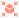
Force: Shape#
{kind=link}
A force field that is generated based on the surface or volume of a shape or imported mesh.
Activity#
Force Active: Force activity, if set to false the force will be ignored.
Show Force Masks: If checked, the shapes connected to the Mask Shapes pin will be visible in the viewport to display where the force will be masked.
Show: Should the force shape object be visible or not.
Behavior#
- Matching Inside/Outside values: If active, the values applied to the outside of the shape will mirror the values applied inside. If unchecked, the following parameters are revealed:
Inside Constant force dampening: Compensate constant forces inside the shape, 0 means no compensation, 1 means total compensation (constant forces have no effect).
Inside Attract Strength: Force strength inside the shape. Positive values will pull towards the surface. Negative values will push away from the surface.
Inside Falloff: Falloff effect based on distance to the surface, 0 mean no falloff (constant force).
Outside Constant force dampening: Compensate constant forces outside the shape, 0 means no compensation, 1 means total compensation (constant forces have no effect).
Outside Attract Strength: Force strength outside the shape. Positive values will pull towards the surface. Negative values will push away from the surface.
Outside Falloff: Falloff effect based on distance to the surface, 0 mean no falloff (constant force).
Constant force dampening: Compensate constant forces where this force is applied, 0 means no compensation, 1 means total compensation (constant forces have no effect).
Attract Strength: Force strength towards the shape. Positive values will pull towards the surface. Negative values will push away from the surface.
Falloff: Falloff effect based on distance to the surface, 0 means no falloff applying the force universally in the simulation.
Shape dilation: Expands the input shape preserving its original state, identical to scaling the primitive/mesh but without changing it.
Mask#
Forces can be masked using shapes plugged into the Mask Shapes input pin. This masking effect can be tweaked using the parameters in this tab, which are the same as the ones from the  Force: Constant node documented here!
Force: Constant node documented here!
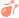
Force: Drag#
{kind=link}
Creates a force opposing the current velocity of the fluid, dampening its movement.
Activity#
Force Active: Force activity, if set to false the force will be ignored.
Show Force Masks: If checked, the shapes connected to the Mask Shapes pin will be visible in the viewport to display where the force will be masked.
Behavior#
Strength: Force strength, linear multiplier to the resulting drag force. Higher values result in the liquid slowing down quicker.
Power: When it comes to drag, particles moving faster are slowed down more than particles moving slower. This exponent controls this effect. A smaller exponent makes this effect less pronounced and a larger exponent makes this effect more pronounced. The physically correct value is 2.
Mask#
Forces can be masked using shapes plugged into the Mask Shapes input pin. This masking effect can be tweaked using the parameters in this tab, which are the same as the ones from the  Force: Constant node documented here!
Force: Constant node documented here!
 Force: Turbulence#
Force: Turbulence#
Injects noise into the simulation.
Activity#
Force Active: Force activity, if set to false the force will be ignored.
Show Force Masks: If checked, the shapes connected to the Mask Shapes pin will be visible in the viewport to display where the force will be masked.
Behavior#
Scale: The relative scale of the noise force. Higher values make for a lower frequency noise resulting in bigger deformations in the affected liquid. For example, this can be useful for creating bigger waves. Lower values make for a high frequency noise resulting in smaller deformations. For example, this can be useful for adding more fine detail in the liquid.
Seed: The seed of generated noise. Different seeds generate unique random noise patterns.
Octaves: Amount of noise patterns (octaves) to be combined. Higher values will add more detail to the noise, but it will be more expensive.
Lacunarity: The lacunarity determines how the scale changes for each octave. The frequency of the noise is multiplied by this value.
Gain: The gain determines how the amplitude changes for each octave. A gain larger than 1.0 will amplify the noise for every octave, while a value less than 1.0 will dampen it.
Strength: Noise force strength. Higher values increase the amount of turbulence.
Animation Speed: Animation speed of the noise. Zero is a static noise. Higher values will make the noise pattern change faster over time.
Bias: The bias causes the noise to have a greater chance of pointing in a specific direction. The given vector determines both the direction and how much bias towards it there will be. Values closer to zero means a more random noise.
Rotation: The relative orientation of the noise force. Changing the rotation will rotate the entire noise pattern as a whole.
Mask#
Forces can be masked using shapes plugged into the Mask Shapes input pin. This masking effect can be tweaked using the parameters in this tab, which are the same as the ones from the  Force: Constant node documented here!
Force: Constant node documented here!
 Force: Line#
Force: Line#
Generates a force around a line that can be used to inject custom velocities into the simulation and particles. This is useful for creating tornadoes, push forces, wind shears, rotating portals, and various other phenomenon.
Activity#
Force Active: Force activity, if set to false the force will be ignored.
Show Force Masks: If checked, the shapes connected to the Mask Shapes pin will be visible in the viewport to display where the force will be masked.
Behavior#
Position: The position of the line force in world space.
Rotation: The world space orientation and direction of the force, in degrees, per axis of rotation.
Push Strength: How strongly to push along the line. Negative values will reverse the direction.
Twist Strength: How strongly to twist around the line. Positive values will twist counter-clockwise. Negative values will twist clockwise.
Repel Strength: How strongly to repel away from or attract towards the line. Positive values will push away from the line. Negative values will pull towards the line.
- Falloff: Falloff type.
None: No falloff will be applied. The line force will affect the whole simulation equally.
Linear The force will decrease its intensity from full on at the line to full off away from the line over the specified falloff radius using a linear interpolation. This interpolation is good for getting the most predictable results.
Quadratic: The force will decrease its intensity from full on at the line to full off away from the line over the specified falloff radius using a quadratic interpolation. This interpolation is good for getting a smoother transition at the start and the end of the falloff.
Cubic: The force will decrease its intensity from full on at the line to full off away from the line over the specified falloff radius using a cubic interpolation. This interpolation is good for getting a smoother transition in general.
- Custom: The force will decrease its intensity from full on at the line to full off away from the line over the specified falloff radius using a custom interpolation based on the Falloff exponent parameter. This interpolation is good for forcing specific behaviors especcially in the middle of the falloff distance.
Falloff exponent: Falloff factor, 0 or results in no falloff. Think of this as a gamma value between a gradient from the force being applied to the force being turned off.
The following parameters are only revealed when the Falloff is not set to None!
{kind=link}
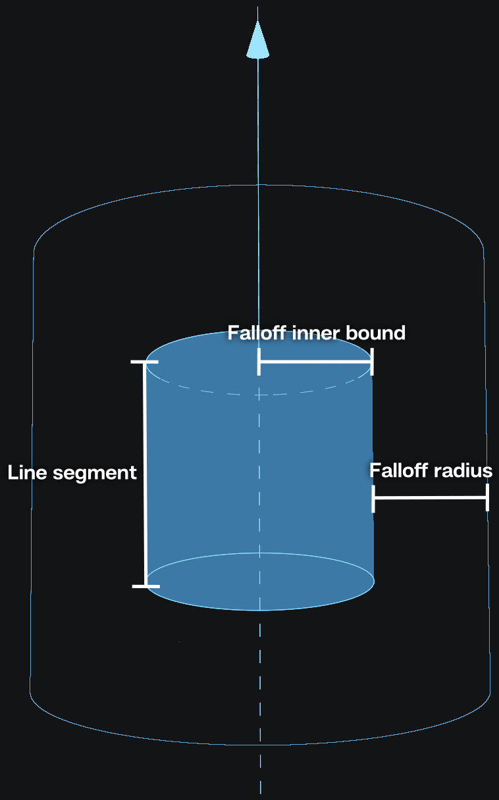
- Use line segment: If checked, the force will be limited to a segment and not an infinite line.
Line segment length: Length of the line segment.
Inverse falloff: If checked, the falloff is inverted and the force will be strongest outside of the falloff radius and then reduce as it gets closer to the line. By default, the force will be strongest near the line and will reduce in strength to the falloff radius.
Falloff percent: Amount of force to be removed outside of the falloff range.
Falloff radius: The radius of the force falloff in meters. If there is a falloff inner bound, the falloff radius will begin at the radius of the inner bound.
Falloff inner bound: The radius from the line, in meters, where the forces are the strongest and have no falloff. Another way to think about it is the radius from the line at which the falloff begins.
Mask#
Forces can be masked using shapes plugged into the Mask Shapes input pin. This masking effect can be tweaked using the parameters in this tab, which are the same as the ones from the  Force: Constant node documented here!
Force: Constant node documented here!
 Force: Toroidal#
Force: Toroidal#
Used to inject custom velocities into the simulation and particles. This emulates something akin to a magnetic field.
Activity#
Force Active: Force activity, if set to false the force will be ignored.
Show Force Masks: If checked, the shapes connected to the Mask Shapes pin will be visible in the viewport to display where the force will be masked.
Behavior#
Position: The position of the toroidal force in world space.
Rotation: The world space orientation and direction of the force, in degrees, per axis of rotation.
Push Strength: How strongly to be pushed through and around the circle in a toroid shape. Negative values will reverse the direction.
Twist Strength: How strongly to twist along the dotted toroid circle. Positive values will twist counter-clockwise. Negative values will twist clockwise.
Repel Strength: How strongly to repel away from or attract towards the dotted toroid circle. Positive values will push away from the circle. Negative values will pull towards the circle.
Radius: Radius of the torus.
- Falloff: Falloff type.
None: No falloff will be applied. The toroidal force will affect the whole simulation equally.
Linear The force will decrease its intensity from full on at the dotted toroid circle to full off away from the dotted toroid circle over the specified falloff radius using a linear interpolation. This interpolation is good for getting the most predictable results.
Quadratic: The force will decrease its intensity from full on at the dotted toroid circle to full off away from the dotted toroid circle over the specified falloff radius using a quadratic interpolation. This interpolation is good for getting a smoother transition at the start and the end of the falloff.
Cubic: The force will decrease its intensity from full on at the dotted toroid circle to full off away from the dotted toroid circle over the specified falloff radius using a cubic interpolation. This interpolation is good for getting a smoother transition in general.
- Custom: The force will decrease its intensity from full on at the dotted toroid circle to full off away from the dotted toroid circle over the specified falloff radius using a custom interpolation based on the Falloff exponent parameter. This interpolation is good for forcing specific behaviors especcially in the middle of the falloff distance.
Falloff exponent: Falloff factor, 0 or results in no falloff. Think of this as a gamma value between a gradient from the force being applied to the force being turned off.
The following parameters are only revealed when the Falloff is not set to None!
{kind=link}
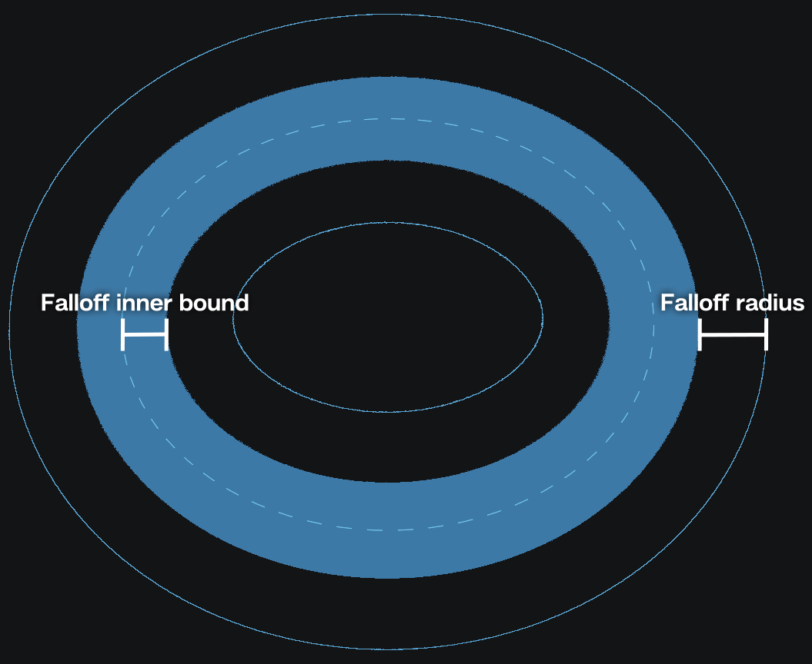
Inverse falloff: If checked, the falloff is inverted and the force will be strongest outside of the falloff radius and then reduce as it gets closer to the dotted toroid circle. By default, the force will be strongest near the dotted toroid circle and will reduce in strength to the falloff radius.
Falloff percent: Amount of force to be removed outside of the falloff range.
Falloff radius: The radius of the force falloff in meters. If there is a falloff inner bound, the falloff radius will begin at the radius of the inner bound.
Falloff inner bound: The radius from the dotted toroid circle, in meters, where the forces are the strongest and have no falloff. Another way to think about it is the radius from the dotted toroid circle at which the falloff begins.
Mask#
Forces can be masked using shapes plugged into the Mask Shapes input pin. This masking effect can be tweaked using the parameters in this tab, which are the same as the ones from the  Force: Constant node documented here!
Force: Constant node documented here!
 Light#
Light#
 Light: Directional#
Light: Directional#
A directional light which mimics the sun. This node is typically used as an input for the  Skybox node.
Skybox node.
Active: The light will be ignored if this is set to false.
- Direction definition: How is the direction determined.
- Angles: Determines the light direction using the azimuth (rotation) and elevation angle.
Azimuth: The rotation of the directional light.
Elevation: The elevation of the directional light.
- Positions: Determines the light direction using a source and a target position.
Source position: The position of the light source in world space.
Target position: The position of the lights target in world space. The directional light will be pointed at this target position.
Light intensity: The intensity/strength of the light.
Light color: The color that the light emits.
Angular size: The angular size of the light. It controls the apparent size of the light source. Larger values makes shadows softer.
 Light: Point#
Light: Point#
A light source which emits uniformly in all directions.
Active: The light will be ignored if this is set to false.
Light intensity: The intensity/strength of the light.
Light color: The color that the light emits.
Position: The position of the light in world space.
Light radius: Size of the point light. Think of this as the radius of the lightbulb. Higher values result in a bigger light creating softer shadows and bigger specular highlights.
 Light: Area#
Light: Area#
Light source emitting from either both or one side of a rectangular plane.
Active: The light will be ignored if this is set to false.
Light intensity: The intensity/strength of the light.
Light color: The color that the light emits.
Position: The position of the light in world space.
Rotation: The rotation of the area light.
Dimension: Height and width of the area light. Bigger lights give a softer look and bigger specular highlights, smaller lights give more contrast and smaller highlights.
Double sided: If checked, light is also emitted from the backside of the area light.
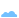
Whitewater#
{kind=link}
 Whitewater#
Whitewater#
Facilitates the creation of, and determines the behaviour of whitewater in the scene. This node needs to be connected to the Whitewater pin on the  Simulation node for whitewater to exist .
Simulation node for whitewater to exist .
Activity#
Whitewater activity: If checked, the white water system is active. If unchecked, whitewater particles will not spawn.
Show: Should whitewater be visible or not.
Simulation#
Simulate spray: Toggles whether to simulate spray or whether to kill spray particles immediately.
Simulate foam: Toggles whether to simulate foam or whether to kill foam particles immediately.
Simulate bubbles: Toggles whether to simulate bubbles or whether to kill bubble particles immediately.
Source#
Trapped air: Range: Range of values that determine where particles will be emitted due to trapped air. Trapped air is indicated with yellow and transitions from cyan to purple for non-trapped air.
Trapped air: Max Depth: Maximum depth at which air can be trapped (generating bubbles).
Wave crest: Range: Range of values that determine when particles will be emitted on wave crests. Wave crests are indicated with yellow.
Trapped air: Emission rate: Particles per voxel per second to emit due to trapped air.
Wave crest: Emission rate: Particles per voxel per second to emit on wave crests.
Initial HP: Range of Amount of health points assigned to a particle. Health points are consumed at different rates for different white water particle types (spray, foam, or bubbles). When all health points are consumed, the whitewater particles dies. The rate at which the health points are consumed is specified with the decay parameters in the Dynamics tab.
Foam: initial spread: Determines how random the initial direction for the foam will be. Decrease this value if the whitewater jumps above the surface more than desired.
Bubbles: initial spread: Determines how random the initial direction for the bubbles will be.
Dynamics#
Surface offset: Higher values will position the foam further from the liquid surface. Lower values will position the foam deeper into the liquid surface.
Apply liquid drains: Apply the same drains to the whitewater as they are being applied to the general simulation of the fluid, on top of the custom drains pinned to this node.
Spray: Apply liquid forces: Apply the same forces to the whitewater as they are being applied to the general simulation of the fluid, on top of the custom forces pinned to this node.
Spray: Buoyancy: Acceleration applied to the spray because it’s immersed in air. Useful to make the spray linger, or a cheap way of simulating the effect of wind on it.
Spray: Decay: Amount of health points that the spray looses each second. Particles are removed from the simulation once their health points reach zero.
Foam: Decay: Amount of health points that the foam looses each second. Particles are removed from the simulation once their health points reach zero.
Foam: Drag: Amount of velocity that the foam looses to drag.
Bubbles: Decay: Amount of health points that the bubbles looses each second. Particles are removed from the simulation once their health points reach zero.
Bubbles: Buoyancy: Acceleration applied to the bubbles because they are immersed in the liquid.
Bubbles: Drag: Amount of velocity that the bubbles looses to drag.
Bubbles to foam rate: Amount of bubbles that will turn into foam instead of disappearing.
Appearance#
Spray: Radius: Radius for each spray particle.
Spray: Opacity: Opacity for each spray particle.
Foam: Radius: Radius for each foam particle.
Foam: Opacity: Opacity for each foam particle.
Bubbles: Radius: Radius for each bubble particle.
Bubbles: Opacity: Opacity for each bubble particle.
 Whitewater Source#
Whitewater Source#
Used with the  Whitewater node by being plugged into its Sources input pin to define regions in the scene where whitewater will be spawned. Whitewater will not be spawned outside of these regions.
Whitewater node by being plugged into its Sources input pin to define regions in the scene where whitewater will be spawned. Whitewater will not be spawned outside of these regions.
Activity#
Whitewater activity: Whitewater activity, if set to false that whitewater particles won’t spawn.
Invert shape: Checking this has the effect of the outside of the shape being considered interior and vice-versa.
Show: Should the shape masks be visible or not.
Source#
Trapped air: Range: Range of values that determine when particles will be emitted due to trapped air.
Trapped air: Max Depth: Maximum depth at which air can be trapped (generating bubbles).
Wave crest: Range: Range of values that determine when particles will be emitted on wave crests.
Trapped air: Emission rate: Particles per voxel per second to emit due to trapped air.
Wave crest: Emission rate: Particles per voxel per second to emit on wave crests.
Initial HP: Range of Amount of health points assigned to a particle. Health points are consumed at different rates for different white water particle types (spray, foam, or bubbles). When all health points are consumed, the whitewater particles dies. The rate at which the health points are consumed is specified with the decay parameters in the Dynamics tab of the Whitewater node.
Foam: initial spread: Determines how random the initial direction for the foam will be. Decrease this value if the whitewater jumps above the surface more than desired.
Bubbles: initial spread: Determines how random the initial direction for the bubbles will be.
Mask#
Shapes offset: This will offset the surface of the linked shapes. This allows for enlarging or shrinking the emitter without having to change the shapes themselves.
Falloff distance: Sets a falloff distance inwards. Emission strength ramps up from 0% at the boundary to 100% at the specified distance, creating a gradual effect.
Camera  #
#
Collection of nodes related to 3D-cameras.
Camera #
This is what you’re looking through when rendering or viewing the effect.
You can use a camera by selecting it in the Camera dropdown menu on top of the viewport.
General#
- Activate / Copy
Activate: This button will use the selected camera in the viewport.
Copy From Active: This button will copy the settings from the camera you’re currently looking through to the selected camera. This can be useful when you used the default camera to frame your effect and then want that orientation quickly translated to your render camera.
Lock: When you are happy with the camera position you can lock the camera so you can’t accidentally move it.
Transform#
Position: Position of the camera in 3d-space.
Yaw Angle: Yaw angle, in degrees. Move perspective left and right.
Pitch Angle: Move perspective up and down.
Roll Angle: Roll angle, in degrees. Rotate perspective.
Near clipping plane: Minimum distance things need to be from the camera in order to be rendered.
Far clipping plane: Maximum distance things can be away from the camera in order to be rendered.
Display#
- Projection: Choose the projection mode of the camera.
- Perspective: Realistic and most commonly used projection method similar to images made with a real camera. Distant objects appear smaller and parallel lines point to a vanishing point.
- Lens parameter: Method for zooming in or out.
- Focal Length: Simulates camera zooming by using focal length and sensor width like a real camera.
Sensor width: Width of camera sensor.
Focal length: Distance from the lens center to the focal point. Higher values are more zoomed in and lower values are more zoomed out.
- FOV: Simulates camera zooming using a field of view parameter.
Field of view: Vertical angle between the focal point and the sensor. Higher values are more zoomed out and lower values are more zoomed in.
- Orthographic Projection method where there is no vanishing point and distance doesn’t affect size. It is like a technical illustration or using an infinitely large focal length. Everything is flattened giving a stylized look. This mode can be useful to render distant elements that will be placed on flat planes.
Orthographic width: This determines the size of the orthographic plane which is similar to 2D zooming in or out on an image. Higher values will show more of the scene. This value is also changed by zooming in or out using the camera navigation controls in the viewport.
Display Resolution: Resolution used in the render tab preview. This will also dictate the aspect ratio. Right next to the W and H (width and height) fields is a dropdown menu where you can select a resolution preset for 720p, 1080p or 4k. You can also add your own presets by inputting the desired pixel resolution in the W and H fields and clicking on the
 icon.
icon.
Preview#
The parameters in this tab only apply to the displayed image in the Preview tab!
These parameters mirror the ones on top of the Preview tab.
Preview scale to fit If checked, this will scale the displayed image such that it fills the entire viewport window while keeping the aspect ratio fixed.
Display scale Only works when Preview scale to fit is checked off! This will scale the displayed image up and down.
Backplate#
- Use backplate: Use a backplate as a viewport background when looking through the camera.
Import Backplate: Filepath and name of the backplate or first image in the backplate sequence.
- Animated backplate: If checked, LiquiGen will look for an image sequence to be used as backplate clip.
Backplate frame rate: The framerate at which the backplate will be played. If you have a sequence that’s supposed to be played at 30 frames per second, you should set this to 30 which means that the next frame of the image sequence will be played every other frame in LiquiGen (since LiquiGen runs at 60 fps).
First frame: Starting frame of the image sequence. You can use positive values to start the image sequence later in the simulation or negative values to trim the first part of you image sequence. Note that this value is relative to the Backplate frame rate so the simulation/timeline frame on which the image sequence starts is (60 / Backplate frame rate x First frame)
sRGB: If checked, the backplate is assumed to be encoded in the sRGB color space.
Camera: Look At #
This node is a look at position for a camera. When connecting this node to the Control pin on the camera, the camera will always look at the specified focus position.
When connecting a Camera: Look At node to a Camera node the Position, Yaw angle, Pitch angle, and Field of view parameters of the camera will be controlled in the Camera: Look At
Focus Position: Position in 3d-space the camera will be oriented to.
Field of view: Field of view parameter of the connected camera node.
- Coordinate Space:
- Fixed Position: Will allow for changing the camera’s position relative to the focus position.
Camera Position: Position of the camera. With this, the camera will still always be oriented to the focus position.
- Fixed Orientation: Will allow for changing the camera’s orientation relative to the look-at and reveal the Camera Radius, Yaw Angle, and Pitch Angle parameters.
Camera Radius: Distance from focus position for the camera.
Yaw Angle: This can be used to move around the focus point. By connecting this parameter to a cycle node with a low frequency you can create nice turntable animations.
Pitch Angle: Orient up or down from the focal point viewing it from a higher or lower angle.
 Import#
Import#
Used to import both static and animated meshes into to the scene that can be used with emitters, colliders and any node which supports a mask.
For more info read our FBX, OBJ, ABC Import page!
Note that imported models should be suitable for simulation. This means the geometry should be closed. Also, for any part thinner than the voxel size the geometry can’t be processed properly for simulation.
Asset#
- Voxel Sizing: Sets how the voxel size on the imported mesh is defined.
- Relative: Defines the voxel resolution of the imported mesh as a fraction of the simulation’s resolution.
Relative Resolution: Defines the voxel resolution scaling of the imported mesh relative to the voxel size setup in the Simulation node. A value of 100% means the voxel density of the imported mesh is the same as the simulation’s. A value of 200% means a 2x increase in resolution compared to the underlying simulation. Higher values can give better results with high detailed models, lower values can decrease simulation times. To see the effect of this parameter on the SDF, go to the Models section in the diagnostics panel.
- Absolute Defines the voxel resolution of the imported mesh based on the inputted voxel size.
Voxel Size: Defines the size of the imported mesh’s voxels. Smaller values will capture finer details of the mesh, but it will make it more memory and computationally expensive to use. To see the effect of this parameter on the SDF, go to the Models section in the diagnostics panel.
Animations#
- Animate: If checked, the animation will be played provided the model contains animations.
Animations: Here, you can pick the desired animation layer provided you have multiple.
Transform#
Pivot: Offset applied to the position of the import before scaling.
Master scale: Large scale multiplier, used to easily scale very large or very small scenes into a fitting size.
Scale: Regular scale option for fine-tuning the size of the imported assets.
Position: Offset applied to the position of the imported asset.
Rotation: Offset applied to the rotation of the imported asset.
Auto pivot: Automatically sets the Pivot parameter so that the pivot point sits at the center on the imported mesh shapes.
Playback#
Loop animation: If on, the animation will replay forever.
- Override FPS: If true you can define the frames per second. If you set this to the Timestep which is 60 by default your export should line in your target application. You can also set the FPS to 30 and leave the Timestep at 60 for example, but then you will have set your export frame strides to 2 for things to line up in your target application.
FPS: Frames per second replacing the one read by the importer.
Frame delay: The number of frames by which to delay the animation. A negative value will advance the animation.
Duration offset: The number of frames by which to modify the duration of the animation. It can be useful for getting perfectly looping animations by trimming the end of the animation.
Mask#
Using masking you can ouput specific parts of your import to a Mask output pin.
- Mode: Define the method of masking the import:
Meshes: This will give a checklist containing all the seperate objects of the imported 3d-scene. These objects can be added to the mask by checking their boxes.
Bones: This will give a checklist containing all the skeletonal joints (if you have any) of your 3D-scene. By checking a joint the assiciated vertices will be added to the mask.
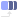
Export#
{kind=link}
 Export: Image#
Export: Image#
Used to export different render passes of the scene to image files, either as a single image, a sequence of images or a flipbook.
Camera#
In this tab, the camera to be used for rendering can be selected. Note that the  Camera node must be plugged into the
Camera node must be plugged into the  Scene for the camera to show up in this list.
Scene for the camera to show up in this list.
The Activate button sets the perspective in the viewport to the selected camera to quickly see which camera you’ll be exporting.
Render Passes#
A render pass (also known as AOV or capture type) contains specific information about the scene. These can be very helpful when using the effect in your compositing software or game engine.
For a detailed description on how to use this tab for the Render Pass mapping, please check out our Render Pass Mapping page!
- The following is a list of all available render passes. Some of these passes refer to parameters of the Appearance node.
Render Viewport: Renders all elements, giving the same result as what you see in the Scene tab.
Render All (Path Tracer): Combined render for the Path Tracer render method.
Render All (Rasterizer): Combined render for the Rasterizer render method.
Alpha: Transparency channel.
Diffuse: Color and shading component for the Path Tracer render method.
Reflect: All material reflections for the Path Tracer render method.
Refract: All refractions (see through parts of the render) for the Path Tracer render method.
Diffuse (rasterized): Color and shading component for the Rasterizer render method.
Reflect (rasterized): All material reflections for the Rasterizer render method.
Refract (rasterized): All refractions (see through parts of the render) for the Rasterizer render method.
Depth: Pixel values mapped based on the object distance from the camera. Higher values are further from the camera and lower values are closer to the camera.
Normals: The image is shaded based on the face angles of the objects.
Albedo: Color values of the materials.
Roughness: Roughness values of the materials.
Reflectivity: Reflectivity values of the materials.
Rim_Reflectivity: Rim reflectivity values of the materials.
Emission: Emission values of the materials.
Transmission: Tansmission values of the materials.
Thickness: Greyscale image that maps the colors based on the thickness of the liquid mesh. Brighter values mean a thicker part of the liquid mesh.
In the Preview tab of the viewport, you can preview all render passes by selecting them in the dropdown menu at the top of the viewport.
Export#
- Export Mode The following export modes are available:
- Flipbook: Method of exporting used in game engines where every frame of the timeline has its own square on one big image file.
Flipbook Size: Resolution of the flipbook image. The width and height resolutions per flipbook frame is this value divided by the number of rows and columns.
Flipbook Columns/Rows: The number of columns/rows (horizontally/vertically aligned frames) in the flipbook. Columns x Rows = Maximum amount of frames
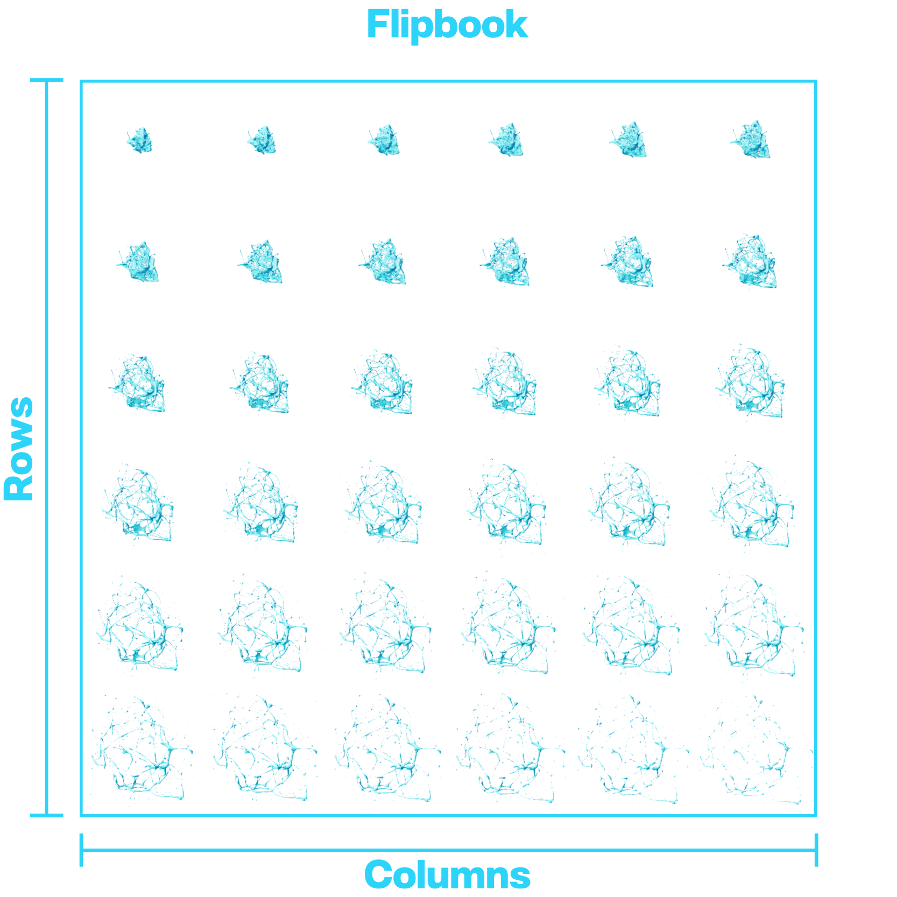
- Sequence: Method of exporting used in video where every frame gets its own image file.
- Use camera’s resolution: Uses the camera’s display resolution in place of this node’s image size.
- Checked: Uses the selected camera’s display resolution.
Display resolution: Pixel resolution of each image file for the sequence. This parameter is linked to the one in the Display tab of the
Camera node.
- Unchecked: Reveal the Image Size parameter to set the export resolution independent of the camera’s display resolution.
Image Size: Pixel resolution of each image file for the sequence.
{kind=link}
Right next to the W and H (width and height) fields is a dropdown menu where you can select a resolution preset.
You can also add your own presets by inputting the desired pixel resolution in the W and H fields and clicking on the  icon.
icon.
First Frame: First frame in the timeline that will be exported.
Number of Frames: Total amount of frames that will be exported.
Frame Stride Number of frames between exported frames. A value of 1 means that all consecutive frames will be exported, a value of 2 means that every other frame is exported, etc.
Numbering offset: Offset applied to the frame numbers used in the resultant filenames. For example, if this parameter is set to 1000 the first file in the sequence will use the number 1000, the second file 1001, etc.
Specifying the Frame Range:
- The are two ways to specify the range of frames to be exported:
Each
Export: Image node is represented in the Timeline Editor as a blue
bar showing the range of frames to export. It can be dragged and resized by  clicking and dragging.
clicking and dragging.The First Frame and Number of Frames parameters in the Export tab of the Render node can be used to specify the range. For example, if you want to export frames 230 to 450 you set First Frame to 230 and Number of Frames to 221 (450 - 230 + 1).
{kind=link}
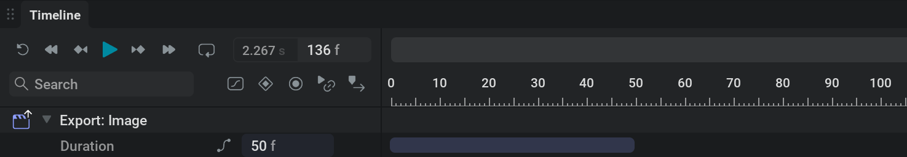
- Directory: The Directory and Filename fields can be used to set the directory and name of your exported file(s). The directory can be set by typing it into the text field or by browsing for it in the explorer that pops up when clicking on the
 icon. You will want to export your files locally. If you are exporting to a network drive this can cause instability in simulations and renders, this is the case for all file types. The file format can be set to one of the following:
icon. You will want to export your files locally. If you are exporting to a network drive this can cause instability in simulations and renders, this is the case for all file types. The file format can be set to one of the following: .png: Recommended for smaller file sizes. Reveals the Bit Depth option to pick between an 8-bits or 16-bits png file. A higher bit depth creates a larger file size but can store more values.
.tga: Recommended for faster exports.
.exr: For uncompressed or HDR workflows. Reveals the Bit Depth option to pick between an 16-bits or 32-bits png file.
- Directory: The Directory and Filename fields can be used to set the directory and name of your exported file(s). The directory can be set by typing it into the text field or by browsing for it in the explorer that pops up when clicking on the
When .exr is selected for the filetype and Multi Layer or Multi Part is selected in the EXR Type dropdown menu, the render passes will be exported to layers within one file. For the other file formats, each layer will be exported to a separate file.
Because an export process will often result in multiple output files, the Directory and Filename fields can use variables in order to systematically assign names to the output files and folders.
{kind=link}
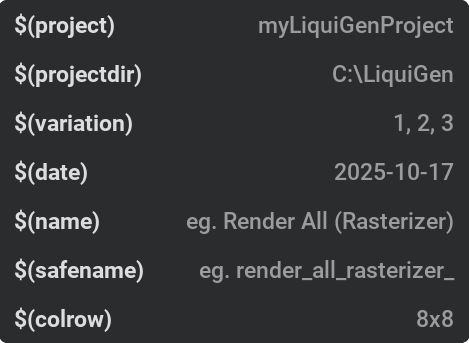
These variables can be added by picking them from the dropdown menu that appears when you  click within a text field.
click within a text field.
This dropdown menu shows the variable on the left side and an example of the variable result on the right side.
You can see an example of the resultant export filename by looking at the text right next to the  icon.
icon.
- The following built-in variables can be used:
$(project)will be replaced by the .liquigen project filename.$(projectdir)will be replaced by the filepath of the .liquigen file. Adding\..will move a folder upwards.$(variation)will be replaced by the current variation. For more information on exporting variations please check our Randomization section!$(date)will be replaced by the current date (year-month-day).$(name)will be replaced by the layer name. This variable is not available and will not be resolved for EXR Multi Layer or Multi Part files since they store all layers in one file.$(safename)will be replaced by a “safe” version of the layer name. This will only include alphanumeric characters, replace&and+withand, and convert any other character to underscores. This variable is not available and will not be resolved for EXR Multi Layer or Multi Part files since they store all layers in one file.$(colrow)Only in flipbook mode! Will be replaced by the amount of columns and rows of the flipbook using the following syntax (Amount of Columns)x(Amount of Rows).A sequence of
#will be replaced by the frame number starting with 0. The number will be padded with zeros until there are as many digits as#characters. If Absolute Frames is checked then the simulation step number will be used (i.e. the first value will be equal to First Frame instead of 0).
Example:
On 2023-02-23 I’m working in a file called myLiquiGenProject_04.liquigen which is located on my computer at C:\Projects\myLiquiGenProject\projectFiles\liquigen I want to export a couple of render passes to png one of which being Render All.
In the Directory field I put the following text $(projectdir)\..\..\EXPORTS\$(date)\$(project)\$(name)
In the Filename field I put the following text $(project)_$(safename)_### and I set the extention in the dropdown next to it to .png
After I exported, I want to have a look at frame 1 of my Render All render pass which I will find in this place with this name:
C:\Projects\myLiquiGenProject\EXPORTS\2023-02-23\myLiquiGenProject_04\Render Viewport\myLiquiGenProject_04_render_viewport_001.png
Custom variables can be set up in Settings > Preferences > User Variables. Check out our User Variables section for more details.
Export to file: The blue Export Now button will start the exporting of the files. The Open Folder button will open the file browser at the location where the files are or will be located.
If you have multiple export nodes you can box-select them all in the Node Graph, then go right-click on the nodes and select Export All. Alternatively the Export Selected button under Node Details can be used (it only appears if multiple export nodes are selected).
Render Settings#
Parameters for this tab will vary based on the currently selected render passes in the Render Passes tab.
This tab therefore can be used to easily find the relevant parameters for the selected render passes.
All the parameters displayed here can also be found in the Preview tab of the viewport after clicking the  icon right next to the render passes dropdown.
icon right next to the render passes dropdown.
Common Parameters:
These parameters will affect multiple different render passes.
- Shapes Rendering: Rendering method for the shapes.
Ignore: Not rendered
Regular Lit: Blocking smoke and flames behind and lit by all lights.
Regular Unlit: Blocking smoke and flames behind and doesn’t receive any light. Uses the Albedo color specified in the Visuals tab of the Emitter or Collider node.
Regular Black: Blocking smoke and flames behind and doesn’t receive any light.
Holdout: Blocking smoke and flames behind and cutting the shapes out from the alpha channel. This can be useful in compositing when you have shapes that should move through the smoke or flames.
Supersampling: Enables super sampling on the Depth, Normals, Albedo, Roughness, Reflectivity, Emission, or Transmission pass which can result in better looking edges.
Render All (Path Tracer):
Samples per-pixel: The total number of samples per pixel in path tracing mode. Higher numbers yield improved clarity, but rendering time also increases.
Samples per-frame: The number of samples to accumulate per-pixel, per batch in path tracing mode. Batching more samples at a time can lead to faster export times while potentially making the system less responsive during exporting.
Render Ground: Determines if ground is rendered in path tracing mode.
Render Skybox: Determines if skybox is rendered in path tracing mode.
Render All (Rasterizer):
Samples per-pixel: The total number of samples per pixel in rasterizer mode. Higher numbers yield improved clarity, but rendering time also increases.
Render Ground: Determines if ground is rendered in rasterizer mode.
Render Skybox: Determines if skybox is rendered in rasterizer mode.
Depth:
Depth Min: Minimal depth used by the exported range. Every depth under this value will be clamped to 0.
Depth Max: Maximal depth used by the exported range. Every depth above this value will be clamped to 1.
Thickness:
Scale: Multiplier for the thickess mapping. Higher values can give a better mapping on thinner liquid meshes and lower values can give a better mapping on thicker liquid meshes.
 Export: Mesh#
Export: Mesh#
Used to export a mesh of the liquid.
Settings#
- Export format: Format to be used for storing the mesh data.
- Alembic
Export velocity: If checked, velocity data per vertex will be exported with the mesh. This can be used for motion blur. Per-vertex vector of 3 float32 named .velocities
FBX
- Mesh Flipbook
Export velocity: If checked, velocity data per vertex will be exported with the mesh. This can be used for motion blur or blended interpolation of mesh flipbooks. per-vertex color in the [0, 1] range. Check the accompanying JSON file to know the exact mapping applied.
- Vertex Animated Texture
Maximum VAT lookup texture width: Width of the lookup texture will be max(#vertices, this_value).
Maximum VAT texture width: Width of the output textures will be max(#particles, this_value).
OBJ
Export#
First frame: First frame that will be exported.
Number of frames: Total number of frames that will be exported.
Frame stride: Number of frames between exported frames. A value of 1 means that all consecutive frames will be exported, a value of 2 means that every other frame is exported.
Numbering offset: Offset applied to the frame numbers used in the resultant filenames.
- Directory: Directory portion of the output filepath.
Filename: Filename portion of the output filepath.
For an explanation on how to use dynamic variables with the directory and filename, please check the example in our Export section!
Export to file: The blue Export Now button will start the exporting of the files. The Open Folder button will open the file browser at the location where the files are or will be located.
If you have multiple export nodes you can box-select them all in the Node Graph, then go right-click on the nodes and select Export All. Alternatively the Export Selected button under Node Details can be used (it only appears if multiple export nodes are selected).
 Export: VDB#
Export: VDB#
This node represents the ability to export VDB files to other packages.
Settings#
- Field: Selects the field that will be exported.
Velocity staggered: Exports a grid in which each velocity component is stored in a different face of each voxel.
Velocity centered: Exports a grid in which the entire velocity is located in the voxel centers.
Field name: The name of the grid in the VDB file.
Length unit: Length unit of the exported file.
Export#
First frame: First frame that will be exported.
Number of frames: Total number of frames that will be exported.
Frame stride: Number of frames between exported frames. A value of 1 means that all consecutive frames will be exported, a value of 2 means that every other frame is exported.
Numbering offset: Offset applied to the frame numbers used in the resultant filenames.
- Directory: Directory portion of the output filepath.
Filename: Filename portion of the output filepath.
For an explanation on how to use dynamic variables with the directory and filename, please check the example in our Export section!
Export to file: The blue Export Now button will start the exporting of the files. The Open Folder button will open the file browser at the location where the files are or will be located.
If you have multiple export nodes you can box-select them all in the Node Graph, then go right-click on the nodes and select Export All. Alternatively the Export Selected button under Node Details can be used (it only appears if multiple export nodes are selected).
 Export: Particles#
Export: Particles#
Used to export liquid, spray, foam and bubbles from the scene as particles.
Settings#
- Export format: Format to be used for storing the particle data.
- Alembic
Spray: If checked, the spray particles of the whitewater setup will be exported.
Foam: If checked, the foam particles of the whitewater setup will be exported.
Bubbles: If checked, the bubble particles of the whitewater setup will be exported.
- Vertex Animated Texture
Maximum texture width: Width of the output textures will be max(#particles, this_value).
Main liquid: If checked, the main liquid particles will be exported.
Export#
First frame: First frame that will be exported.
Number of frames: Total number of frames that will be exported.
Frame stride: Number of frames between exported frames. A value of 1 means that all consecutive frames will be exported, a value of 2 means that every other frame is exported.
Numbering offset: Offset applied to the frame numbers used in the resultant filenames.
- Directory: Directory portion of the output filepath.
Filename: Filename portion of the output filepath.
For an explanation on how to use dynamic variables with the directory and filename, please check the example in our Export section!
Export to file: The blue Export Now button will start the exporting of the files. The Open Folder button will open the file browser at the location where the files are or will be located.
If you have multiple export nodes you can box-select them all in the Node Graph, then go right-click on the nodes and select Export All. Alternatively the Export Selected button under Node Details can be used (it only appears if multiple export nodes are selected).
Modulators  #
#
Most parameters in LiquiGen can be controlled by an external modulation node.
All modulators have an Output tab where you can manage all connected parameters and set their value ranges to which the percentages of the modulator nodes refer.
For details on how to use these nodes and the Output tab, check out our Modulating Parameters page!
Constant  #
#
Generates a signal of a constant value which can be sent to pin-exposed parameters of other nodes.
Allows synced parameters between nodes by connecting one  Mod: Constant node to multiple pin exposed parameters.
Mod: Constant node to multiple pin exposed parameters.
- Mode: Specifies the type of value parameter below. Different modes are more suitable to control different types of parameters.
Single Component: Sends a single value out as a signal. Useful for connecting to slider parameters. The ranges in the output tab are mapped from -100% for the minimun value to 100% for the maximum value.
Unsigned Single Component: Sends a single value out as a signal. Useful for connecting to slider parameters. The ranges in the output tab are mapped from 0% for the minimun value to 100% for the maximum value.
Multi Component: Sends three different values out as a signal. Useful for connecting to 3-vector parameters like position, rotation or color. This mode can also be useful for connecting to range sliders where X will be mapped to the min value and Y to the max value. The ranges in the output tab are mapped from -100% for the minimun value to 100% for the maximum value.
Checkbox: Sends a single boolean value as a signal. Useful for connecting to checkboxes. Unchecked is mapped to unchecked or, if not connected to a checkbox, the minimum value, and checked is mapped to checked or the maximum value.
Value: Value controlling the connected parameters with the specified mapping within the, in the Output tab, specified range.
Oscillator #
Uses an oscillator to generate a waveform the signal of which can be sent to pin-exposed parameters of other nodes.
- Waveform X,Y,Z: When linked to a parameter with a single value only Waveform X is relevant. When modulating a position or rotation parameter X,Y,Z is linked to X,Y,Z. When modulating a color parameter X,Y,Z is linked to R,G,B. There are the following types of waveforms:
None: No oscillation, the value for the waveform will be constant over time and set to the value specified in the Base parameter.
Sine: Sinewave, smooth oscillation back and forth.
Saw: Oscillation over a modulo curve, the value will abruptly reset to the same value every cycle.
Pulse: Abruptly switches from a top value to a bottom value back and forth.
Noise: Values change in an irregular way.
Random Saw: Values will rise to a random number every cycle. The teeth of the saw all have different heights.
Random Pulse: Abruptly switches from a random top value to a random bottom value back and forth.
Random Step: Steps to a random constant value every cycle.
- Custom: Customized waveform to be repeated every cycle.
Custom Waveform: Horizontal axis: time of each cycle, Vertical axis: Value. Using the Curve Generator… in the right-click menu can be especcially useful here. For more information on how to edit the modulation curve, check out our Modulation Curve section!
- Frequency time unit: The time unit the Frequency parameter should use. This can be either a free standing frequency by using Hz or Seconds, or the function of the current project’s settings by using Frames or Loop Divisions.
Hz: The Frequency parameter sets the amount of pattern cycles per second.
Seconds: The Frequency parameter sets the amount of seconds a pattern cycle takes.
Frames: The Frequency parameter sets the amount of frames a pattern cycle takes.
Loop Divisions: The Frequency parameter sets the amount of pattern cycles within the time span of the loop region. The loop region can be revealed by pressing L or the button in the Timeline section.
Frequency: Number of times per time unit the pattern is repeated. Higher values will make the values change faster.
Base: Center value for the parameter. This can be used to offset the whole oscillation curve.
Phase: Temporal offset of the waveform.
Amount: Intensity of the waveform. Higher values will have the oscillated values deviate further from the base.
Attenuation: Intensity multiplier for all the waveforms.
{kind=link}
Cycle  #
#
Outputs a constantly linearly increasing (or decreasing) value for the full range of the output parameter. This node can be used to quickly set up automatic rotations.
- Mode 1,2,3: When linked to a parameter with a single value only Mode 1 is relevant. When modulating a position or rotation parameter 1,2,3 is linked to X,Y,Z. When modulating a color parameter 1,2,3 is linked to R,G,B. There are the following modes:
None: Value is kept at 0
Normal: Values incline over a saw-wave.
Inverted: Values decline over a saw-wave.
- Frequency time unit: The time unit the Frequency parameter should use. This can be either a free standing frequency by using Hz or Seconds, or the function of the current project’s settings by using Frames or Loop Divisions.
Hz: The Frequency parameter sets the amount of pattern cycles per second.
Seconds: The Frequency parameter sets the amount of seconds a pattern cycle takes.
Frames: The Frequency parameter sets the amount of frames a pattern cycle takes.
Loop Divisions: The Frequency parameter sets the amount of pattern cycles within the time span of the loop region. The loop region can be revealed by pressing L or the button in the Timeline section.
Frequency: Number of times per time unit the pattern is repeated. Higher values will make the values change faster.
Phase: Temporal offset of the saw-wave.
Math  #
#
Outputs a signal as a result of mathematical expressions. Expressions can be made using the input variables combined with the available expressions listed on our Expressions page.
Input A: Sliders which can be referenced in the expressions by using the variable a. Specific components can be accessed by using a.x, a.y, and a.z
Input B: Sliders which can be referenced in the expressions by using the variable b. Specific components can be accessed by using b.x, b.y, and b.z
Input C: Sliders which can be referenced in the expressions by using the variable c. Specific components can be accessed by using c.x, c.y, and c.z
Expression 1: Expression for the first component
Expression 2: Expression for the second component
Expression 3: Expression for the third component
Time Shift  #
#
Shifts the signal of a modulator backward or forward in time. Typically used on the output signal of a  Mod: Oscillator or
Mod: Oscillator or  Mod: Cycle node.
Mod: Cycle node.
Temporal Offset: The amount of time in seconds the input signal is offset by. This can be useful for having multiple parameters following the same signal but offsetted. Like shapes moving along an oscillator pattern trailing each other.
Temporal Scale: Time remapping for the input signal. For example, a value of 200% makes an input sinewave oscillate twice as fast. This can be used to change the frequency (speed) of the whole signal instead of changing all individual frequencies.
Combine  #
#
Combines the signal from two modulator nodes.
Mode: Sets which mathematical operation is used to combine the two modulator signals.
Mix: Mix of the two inputs: -100% is the first input only, 100% is the second input only; 0% is an equal mix of the two.

ADSR  #
#
The ADSR Node allows you to map a specific parameter to an ADSR Envelope.
ADSR stands for Attack, Decay, Sustain, Release. Once the ADSR node “Active” checkbox is on, the envelope will be engaged, starting with the ‘attack’. Attack is the amount of time it takes for the base value of the assigned parameter to reach its peak value, dictated by the Amount %. Decay is the duration of time it takes to get from the peak value to the Sustain value. Sustain is the percentage inbetween the Base and Amount value, and this value will remain the same until the ADSR node is innactive. Once the Active binary is turned off, you will ‘release’ the envelope. Release is the time it takes for the Sustain value to return to the Base value.
The way you would typically want to use this is to link a MIDI node to the Active parameter in the ADSR node. This way, each time you engage the midi note it also follows the ADSR envelope curve. However you can also keyframe this parameter in the timeline, or use an oscillator modulator node to oscillate the activation.
Active: triggers the envelope. when enabled, the envelope is engaged (ADS); when disabled, the envelope is disengaged (R).
Base: Set by the bounds of the controlled parameter, this is the lowest value of the curve represented by a percentage from -100% to 100%
Amount: Set by the bounds of the controlled parameter, this is the highest value represented by a percentage from -100% to 100%
Attack: The amount of time it takes in seconds for the base value of the assigned parameter to reach its peak value, dictated by the Amount.
Decay: The duration of time it takes in seconds to get from the peak value to the Sustain value.
Sustain: Sustain is the percentage in between the Base and Amount value, and this value will remain the same until the ADSR node is inactive.
Release: Once the Active checkbox is turned off, you will ‘release’ the envelope. Release is the time it takes in seconds for the Sustain value to return to the Base value.
Slope: Using the slope, you can determine the ramp of the Attack, Decay and Release curves. The ramp can be previewed in the Envelope preview.
MIDI  #
#
Generates a signal for modulating parameters based on pressing buttons on a MIDI controller like a keyboard.
To use this you first need to check Settings/Preferences/General/Enable MIDI support
Component count: Toggle between 3 outputs (for position, rotation, or rgb) or a single output.
MIDI Learn: Press this and than use a desired MIDI key to specify the control.
- Midi event: Select the type of events that will modify the values.
- Note Trigger
 Add a spike on the signal by hitting a button.
Add a spike on the signal by hitting a button. Note: MIDI note to use to trigger the signal. This can be set manually here, but it’s easier to use the MIDI Learn button to set it automatically.
- Note Trigger
- Control Change
 Control the signal using a MIDI slider or dial.
Control the signal using a MIDI slider or dial. Control ID: MIDI button or dial to use to control the signal. This can be set manually here, but it’s easier to use the MIDI Learn button to set it automatically.
- Control Change
Base: Center value for the parameter.
Amount: Signal modifier amount for the value. Higher values mean bigger signal changes.
Decay rate: Decay rate of the value after triggering a note. Higher values mean the signal returns quicker to the base value.
Channel: For use with multiple MIDI controllers. Each MIDI controller can be set to a specific channel on the hardware. This parameter can be used to identify specific MIDI controllers. A value of -1 will use all MIDI controllers.
Attenuation: Amount multiplier for all signals.
Last midi message: Displays the last MIDI inputs, like a note or slider change. This can be helpful for debugging or when setting the Note or Control ID manually.
 Color#
Color#
Color is a category of nodes outputting color values.
For a detailed explanation on how to use these nodes check out our Color page!
Color: Constant  #
#
This node represents a color and can be connected to any color parameter.
Color: Pick your color using the Color Picker.
Color: Gradient  #
#
Interpolation Color Space: A dropdown menu with different methods of interpolating color from one point in the color gradient to another.
- Color Gradient: Creates a range of colors.
Add a point by
clicking on the gradient.Move a point holding
and dragging.Remove a point by selecting it with
and pressing DeleteEdit the color of a point by double-clicking
on it.
For a more detailed explanation on this node and on how to make color gradient presets please check out our Color page!
Color Selector  #
#
Using a  Color: Gradient node as input, outputs a color from the gradient at the given position.
Color: Gradient node as input, outputs a color from the gradient at the given position.
Position: The position on the gradient of where to select the color from.
 Skybox#
Skybox#
Controls the sky and atmosphere of the scene which strongly influeces the reflections and lighting.
Active: The skybox will be ignored if this is set to false.
- Skybox Mode: Which skybox mode to use:
None: Turns the skybox off. This results in a black screen if there are no lights or emissive materials in the scene.
- Atmosphere: Simulates a real sky and atmosphere. Changes color based on the sun angle which is the Elevation angle of the Light: Directional node plugged into the Sun pin.
Rayleigh Scattering: Wavelength-dependent scattering coefficient for Rayleigh scattering (per channel). Shorter wavelengths scatter more strongly than longer ones which is why the sky is blue.
Rayleigh Density: Scale height for the Rayleigh scattering density profile. Represents how quickly molecular density falls off with altitude.
Mie Scattering: Wavelength-independent scattering coefficient for aerosols. Controls the brightness of the hazy component of the sky.
Mie Asymmetry: Henyey-Greenstein phase function describing scattering directionality. 0 = Isotropic scattering, > 0 = forward scattering.
Mie Absorbtion: Coefficient for aerosols controlling how much light is absorbed rather than scattered.
Mie Density: Scale height of aerosol density determining how quickly particles thin out with altitude. Usually much lower than Rayleigh values.
Absorbtion of Ozone: Wavelength-dependent absorption for ozone. Ozone strongly absorbs shorter wavelengths and some green/red, shaping the sky color for sunrise/sunset.
Center Height of Ozone: Altitude of peak ozone density.
Thickness of Ozone: Thickness of ozone layer.
Radius of Planet: Radius of the planet.
Radius of Atmosphere: Radius from the planet center to top of the atmosphere.
Atmospheric Multiscattering: Whether to account for multiple scattering events (light bouncing more than once in the atmosphere). Useful for bright horizons and twilight skies.
- Atmosphere: Simulates a real sky and atmosphere. Changes color based on the sun angle which is the Elevation angle of the
- HDRI: Lights the scene using a high dynamic range image.
Filepath: The HDRI file to use for a skybox. Please use the .exr file format
Optimize: The HDRI will be optimized to save GPU memory. The HDRI takes longer to load and the quality can be decreased a little, but the memory savings are significant.
Brightness: Sky brightness multiplier.
Azimuth: Horizontal sky rotation.
- Uniform Color: Lights the scene using a uniform color.
Color: Uniform sky color.
click in the square next to it to open the Color Picker and select your desired color.Color brightness: Brightness multiplier.
- Shade: Lights the scene using a two-color gradient.
Color 1,2: Sets the first and second color of the color gradient with Color 1 being below and Color 2 being above.
click in the square next to it to open the Color Picker and select your desired color.Brightness: Brightness multiplier for the color gradient.
Offset 1,2: Vertically offsets the starting point of color 1 or 2.
 Ground#
Ground#
Used to place a fixed, infinite ground plane into the scene. The ground acts as both a visual representation and a collider for the liquid.
- Ground: Type of ground used in the scene:
None: Turns the ground plane off
- Checkerboard: Uses a checkerboard pattern for the ground.
Ground scale: Scale of the checkerboard pattern in square per meter.
Ground primary, secondary color: The two colors used for the checkerboard.
- Uniform Color: Sets the ground plane to be a single color.
Ground primary color: Color used for the ground plane.
Units: Show measurements on the ground plane. This is the default behavior as it’s a useful way to keep track of the scale of things.
Ground roughness: Lower values make the material more smooth and reflective, higher values make the material more rough and diffused.
Reflectivity: Fresnel reflectance of the material, defined at the normal incidence angle/when viewing the surface straight on (F0). Some examples: 0.04 for plastic, 0.02 for water, 0.05 - 0.16 for gemstones, 0.028 for skin…
Reflective color: Coloring of the reflected light. All dielectrics are typically colorless (white) and conductors can have color. Only hue and saturation has an effect.
Rim reflective color: This parameter controls the color of reflected light at a 90-degree surface angle relative to the camera (on the surface horizon). While physically accurate materials typically display white reflections at this angle, this setting can be adjusted for stylized effects, allowing you to color reflections along the borders.
 Scene#
Scene#
A hub for all objects in the scene. For an object to exist in the scene it should be either connected directly or indirectly to an input of this node.
Simulation#
Controls how the liquid and whitewater fundamentally behave, resource limits and the appearance of the liquid.
Simulation#
Voxel size: Voxel size in meters. It determines the smallest detail that can be solved.
Step rate: Number of steps per second. Every step simulates, meshes, and renders the scene. It can be seen as the project’s framerate.
Sub-steps: Amount of simulation steps to perform per timestep. Substeps are cheaper than full steps (since only simulation is performed). More substeps means more computation, but more accurate results. Icreasing this value can help especcially with high velocities (like fast moving colliders), high surface tension, or high viscosities.
Freeze Simulation: Enabling this parameter will freeze the simulation state while still rendering and progressing the timeline.
- Reset Simulation: Enabling this parameter will reset the simulation and timeline after a certain amount of time in seconds.
Reset Time: When to reset the simulation and timeline.
Resources#
{kind=link}
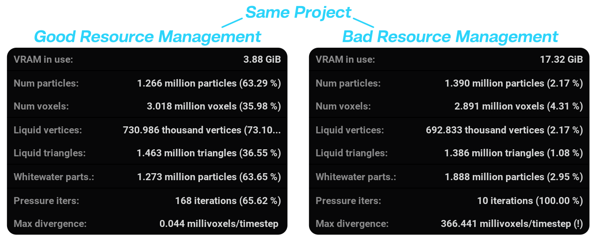
When managing resources, try getting the maximum values close to the actual maximum values of your simulation. This way, you will make sure the simulation is the fastest it can be. You can see how many percent of your resources are used in the Stats in the viewport. The Stats window can be opened by selecting Stats from the  View menu or pressing Shift + S
View menu or pressing Shift + S
Max. number of voxels: Maximum number of active voxels at any given time.
Max. number of particles: Maximum number of particles at any given time.
Max. number of triangles: Maximum number of triangles (polygons) that can be generated for the liquid’s mesh.
Max. number of whitewater particles: Maximum number of whitewater particles at any given time. This parameter can only be used if a
Whitewater node is connected to the Simulation node.

When you hit the limit of these specified resources, the simulation will stop and a message in yellow will be displayed in the viewport. In case of the image on the right, the maximum number of voxels needs to be increased to simulate further.
Solver#
PIC/FLIP ratio: How much FLIP to use. The more FLIP the less numerical viscosity but the more splashy the fluid becomes. PIC’s viscosity is fake in that it won’t make the liquid coil or buckle, but it is extremely cheap compared to a full on viscosity simulation.
Lifetime#
Simulate particle lifetime: Whether particles will have a limited lifetime or not. The lifetime range is defined in the
Emitter Node.
Viscosity#
- Simulate viscosity: Whether to simulate viscosity or not. Viscosity can be used to simulate thicker liquids like honey, the amount of viscosity can be set using the Dynamic viscosity coefficient parameter in the Emitter node. Note that viscosity is quite an expensive feature to simulate. Consider using a low PIC/FLIP ratio and high surface tension as an alternative when possible.
Viscosity: Max. iterations: Maximum number of iterations on the Viscosity Solver. A larger number of iterations will be more accurate and will be able to simulate higher-viscosity liquids. However, the more iterations, the more expensive the computation is. Note that this value sets a maximum, the solver can still stop early if the target error is reached.
Viscosity: Target error: Maximum error that is considered acceptable. Lower values means better coiling, but requires more iterations.
Viscosity: Over-relaxation: How aggressive the solver will be. Higher values can lead to the solver getting better results quicker, at the increased risk of breaking the simulation. The default value is recommended for almost all use cases.
- Simulate viscosity: Whether to simulate viscosity or not. Viscosity can be used to simulate thicker liquids like honey, the amount of viscosity can be set using the Dynamic viscosity coefficient parameter in the
Surface Tension#
Surface Tension: Surface tension defines the tendency of a liquid to clump together and form droplets or strings. Technically, it is the liquid to minimize its surface area. Density affects how strong its effect is, so when matching real liquid data try to match density too and work at real scales. This is specially important since surface tension effects are typically noticeable at small scales. Also note that the units are millinewton-meter, so if the real measurements are in newton-meter they need to be multiplied by 1000.
Pressure#
Pressure: Max. iterations: Maximum number of iterations on the pressure projection solver. The solver can stop early if the target divergence is reached. You can check if the maximum number of iterations is reached in the stats window. If that happens, it is recommended to increase this value to ensure better volume conservation.
Pressure: Target divergence: Maximum divergence that is considered acceptable. Lower values means better volume conservation, but requires more projection iterations.
Pressure: Over-relaxation: How aggressive the solver will be. Higher values can lead to the solver getting better results quicker, at the increased risk of breaking the simulation. The default value is recommended for almost all use cases.
Density#
Density: Density of the liquid. It determines how much mass there is per volume of liquid. Lower values increase the effects of viscosity and surface tension.
Compensate compression: How much extra effort the algorithm will put into resisting the liquid losing volume (compression). Higher values will enforce incompressibility better at the expense of a potentially more explosive behavior. NOTE: Projection itself acts within a single simulation step, but its errors can accumulate over time. This option tries to counter the accumulated error by intentionally ‘failing’ in the opposite direction.
Compensate decompression: How much extra effort the algorithm will put into resisting the liquid gaining volume (decompression). Higher values will enforce incompressibility better at the expense of a potentially more explosive behavior. NOTE: Projection itself acts within a single simulation step, but its errors can accumulate over time. This option tries to counter the accumulated error by intentionally ‘failing’ in the opposite direction.
Mesh#
- Meshing: When enabled, a mesh will be generated from the liquid.
- Higher quality meshing: Doubles the mesh resolution and adds more meshing options.
- Kernel type: Operation that is going to be performed per particle to compute how it contributes to the final SDF that will, then, be meshed.
Isotropic: Faster, but results are more blobby.
Anisotropic: Slower, but result in smoother meshes.
Smoothing radius: For SDF generation. Defines the reach of each particle when computing the SDF. Higher values give a smoother mesh but might reduce detail.
Erosion/Dilation amount: For SDF processing. Negative values move the surface inwards while positive values move the surface outwards.
Open/Close amount: For SDF processing. Negative values move the surface inwards and then outwards (removing isolated islands). Positive values move the surface outwards and then inwards (filling holes and small dents).
Smoothing iterations: For SDF processing. Smooths the SDF resulting from the previous operations a certain amount of iterations. More iterations yields a smoother mesh. This parameter tends to shrink the mesh. If you want to keep the mesh consistent, put the same value for the Erosion/Dilation amount: parameter.
Peaking: For meshing. Peaking displaces the mesh vertices along their normal. Positive means outwards. This can be useful to make folds more pronounced. Negative values can give sharper looking wavecrests or edges.
Smooth Normals: For meshing. Smooths the normals by averaging the normals of nearby points. It doesn’t change the underlying triangles, but meshes will look smoother when shaded.
Isovalue: For meshing. SDF value that marks the surface of the liquid.
Liquid Appearance#
The parameters in this tab control the visual apprearance of the liquid mesh.
These parameters are exactly the same as the ones in the  Appearance node documented here!
Appearance node documented here!
 Render#
Render#
Parameters to configure the rasterizer and path tracer rendering settings.
Rasterizer#
Shadows: If checked, shadows will be rendered to the rasterized viewport.
Max number of samples: Maximum number of samples per pixel. Higher numbers yield improved clarity, but rendering time also increases.
SMAA: Enables Subpixel Morphological Antialiasing. This can make the edges look less jagged.
Path Tracer#
Min viewport samples: Minimum amount of samples per pixel computed to display the render in the viewport.
Max viewport samples: Maximum amount of samples per pixel to be computed when rendering the viewport.
Bounces: Maximum amount of light ray bounces to be computed. Higher values yield less artifacts but higher render times.
Pixel footprint: Determines spread of the ray distribution over a pixel. Higher values give less jagged edges but a more blurry image.
Denoiser#
Denoiser: If checked, the denoising algorithm will be applied.
Denoise Strength: Amount of denoising to be applied. Higher values give a smoother image, possibly at the expense of some fine detail.
Photon Mapping#
Photon mapping: If checked, the photon mapping algorithm will be applied. Photon mapping simulates caustic light (light concentrated by reflection/refraction) resulting in more realistic renders.
Photon radius: The initial radius of a photon (light particle) in voxels. Higher values give less detail in the image but also less noise.
Number of photons: Number of photons to emit from light sources per frame. Higher values means that more light rays are simulated, resulting in a higher quality image at the expense of render time.
Guide primary rays: Enable guiding primary photon mapping rays. Optimizes light ray distribution.
{kind=link}
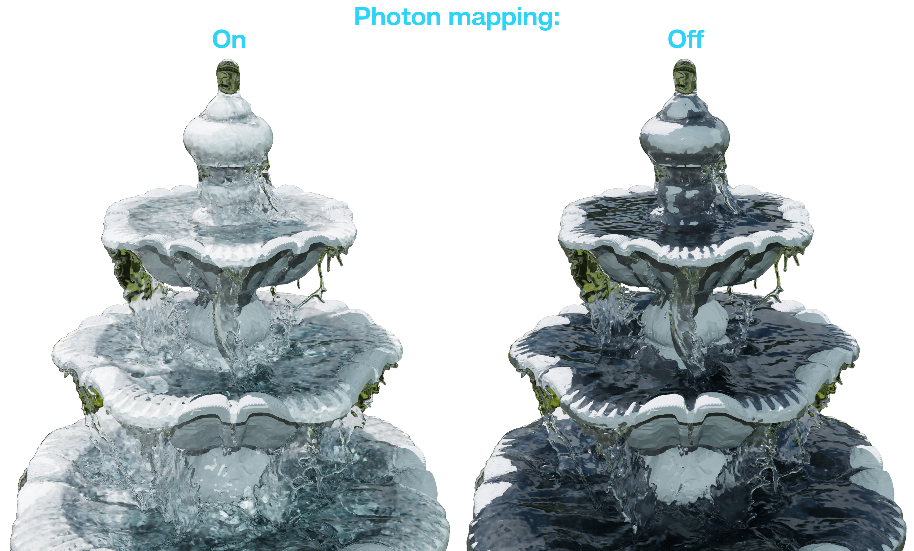